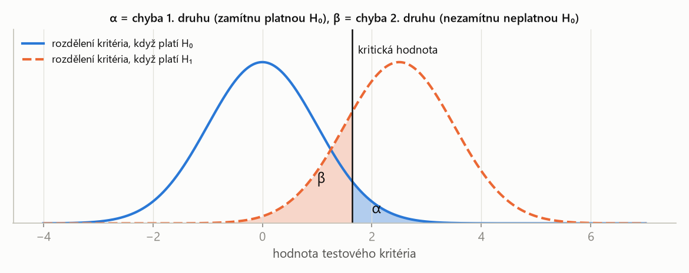
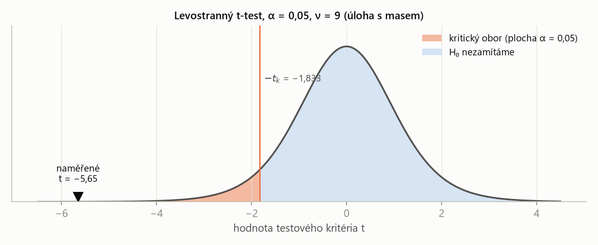

PSO – příprava na zkoušku · Testování hypotéz – PSO · https://balnerm.github.io/pripravy/pso/10_testy.html
Kapitola 10
Testování hypotéz
Má jídelna opravdu 100 g masa v porci? Mají dva výběry stejný průměr? Statistický test rozhodne, zda data dost silně odporují nějakému tvrzení, aby ho bylo rozumné zamítnout. Všechny testy mají stejnou kostru o pěti krocích K1–K5 (jako ve skriptech předmětu); liší se jen testovým kritériem a jeho rozdělením. Úlohy S7/3–S7/5.
Logika testu
Statistická hypotéza je tvrzení o rozdělení náhodné veličiny (např. o parametru μ). Nulová hypotéza \(H_0\) je tvrzení, které testujeme – obvykle „žádný rozdíl, žádný vliv“ (\(\mu = 100\), \(\mu_1 = \mu_2\)). Alternativní hypotéza \(H_1\) je tvrzení, které přijmeme, když \(H_0\) zamítneme.
\(H_0\) je „obžalovaný je nevinný“. Test hledá důkazy proti ní. Když jich je dost, \(H_0\) zamítneme; když ne, říkáme jen „nezamítáme“ – nevinu jsme nedokázali.
Chyba 1. druhu je zamítnutí \(H_0\), která platí; chyba 2. druhu je nezamítnutí \(H_0\), která neplatí. Hladina významnosti α je předem zvolená pravděpodobnost chyby 1. druhu (obvykle 0,05). Pravděpodobnost chyby 2. druhu se značí β a \(1 - \beta\) je síla testu.
α = riziko „odsoudit nevinného“, které jsme ochotni nést. β = riziko „pustit viníka“. Obě chyby nejde snížit zároveň – pomůže jen víc dat.
Testové kritérium je veličina spočítaná z výběru, jejíž rozdělení za platnosti \(H_0\) známe. Kritický obor je množina hodnot kritéria, které za platnosti \(H_0\) nastanou jen s pravděpodobností α; padne-li do něj realizace kritéria, \(H_0\) zamítáme. Hranice kritického oboru je kritická hodnota.
kritérium měří „jak daleko jsou data od \(H_0\)“ v jednotkách, pro které máme tabulku. Kritický obor jsou „podezřele velké“ odchylky.

Posunutím kritické hodnoty doprava zmenším α, ale zvětším β – a naopak. α volíme předem, β závisí na tom, jak moc se skutečnost od \(H_0\) liší a kolik máme dat.
Test je oboustranný, je-li alternativa \(H_1: \mu \ne \mu_0\) – kritický obor je na obou koncích, každý s plochou α/2. Test je jednostranný (levostranný \(\mu < \mu_0\), pravostranný \(\mu > \mu_0\)), je-li kritický obor jen na jednom konci s plochou α.
oboustranně se ptám „liší se?“, jednostranně „je menší?“ / „je větší?“. Volba závisí na otázce v zadání, ne na datech.
- K1 – hypotézy: \(H_0\) (s rovností) a \(H_1\) (≠, < nebo > podle otázky).
- K2 – testové kritérium: co z dat počítám (průměr, rozdíl průměrů, podíl rozptylů) a jeho normovaný tvar.
- K3 – rozdělení kritéria za platnosti H0: t, F, No(0, 1)… a stupně volnosti.
- K4 – kritická hodnota z tabulky pro dané α (oboustranně \(1 - \alpha/2\), jednostranně \(1 - \alpha\)).
- K5 – rozhodnutí: spočítám realizaci kritéria; leží v kritickém oboru → \(H_0\) zamítám, jinak nezamítám. Závěr řeknu slovy zadání.
Když kritérium do kritického oboru nepadne, data jen neposkytla dost důkazů proti \(H_0\). Rozdíl může existovat, ale je malý nebo máme málo dat (malá síla testu). Proto se říká „nezamítáme“, ne „přijímáme“.
Jednovýběrový t-test
| \(\mu_0\) | hodnota z nulové hypotézy (tvrzení, které ověřujeme) |
| \(\bar{x}\), \(s\), \(n\) | výběrový průměr, výběrová směrodatná odchylka, rozsah výběru |
| \(s/\sqrt{n}\) | směrodatná chyba průměru – „měřítko“, kterým se odchylka dělí |
\(H_0\) zamítáme, když:
- oboustranně (\(H_1: \mu \ne \mu_0\)): \(|T| \ge t_{1-\alpha/2}(n-1)\);
- levostranně (\(H_1: \mu < \mu_0\)): \(T \le -t_{1-\alpha}(n-1)\);
- pravostranně (\(H_1: \mu > \mu_0\)): \(T \ge t_{1-\alpha}(n-1)\).
Inspekce vážila maso v jídelně; jídelna uvádí 100 g. Na hladině α = 0,05 otestuj hypotézu, že jídelna nešidí. Deset vzorků: 97,1; 94,8; 93,0; 96,1; 96,8; 98,5; 93,4; 91,7; 94,4; 99,5.
Řešení krok po kroku
K1: \(H_0: \mu = 100\) (nešidí), \(H_1: \mu < 100\) (šidí).
K2: kritérium je výběrový průměr, normovaně \(T = (\bar{x} - 100)\sqrt{n}/s\). Z dat:
\[ \begin{aligned} \bar{x} &= \frac{955{,}3}{10} = 95{,}53 \\ s^2 &= \frac{56{,}401}{9} \approx 6{,}267 \\ s &\approx 2{,}503 \end{aligned} \]K3: za platnosti \(H_0\) má T rozdělení t(9).
K4: levostranný test, \(t_{0{,}95}(9) = 1{,}833\); kritický obor \(T \le -1{,}833\).
K5: realizace kritéria:
\[ T = \frac{95{,}53 - 100}{2{,}503}\sqrt{10} \approx -5{,}65 \le -1{,}833 \]\(H_0\) zamítáme: na hladině 0,05 data prokazují, že porce mají méně než 100 g – jídelna šidí. Oboustranný test (\(t_{0{,}975}(9) = 2{,}262\)) dá stejný závěr, protože \(|T| = 5{,}65\) je daleko za oběma hranicemi.

Kdyby jídelna nešidila, hodnota −5,65 by byla extrémně nepravděpodobná (plocha vlevo od ní je menší než 0,001). Proto \(H_0\) zamítáme. Rozhoduje poloha naměřeného kritéria vůči kritické hodnotě.
Dvouvýběrový t-test
Společný (vážený) odhad rozptylu:
\[ s_p^2 = \frac{(n_1 - 1)\,s_1^2 + (n_2 - 1)\,s_2^2}{n_1 + n_2 - 2} \]Testové kritérium:
\[ T = \frac{\bar{x} - \bar{y}}{s_p\sqrt{\frac{1}{n_1} + \frac{1}{n_2}}} \;\sim\; t(n_1 + n_2 - 2) \]| \(s_1^2\), \(s_2^2\) | výběrové rozptyly obou výběrů |
| \(s_p^2\) | spojený odhad společného rozptylu (průměr vážený stupni volnosti) |
| \(n_1 + n_2 - 2\) | stupně volnosti: dva parametry (dva průměry) jsme odhadli |
Předpoklad: obě veličiny normální a se stejným rozptylem – ověřuje se F-testem (níže).
Dva výběry: \(\bar{x} = 62\), \(s_x^2 = 16\), \(n_x = 10\); \(\bar{y} = 60\), \(s_y^2 = 15\), \(n_y = 14\). Otestuj hypotézu, že oba výběry mají stejnou střední hodnotu (α = 0,05).
Řešení krok po kroku
K1: \(H_0: \mu_x = \mu_y\), \(H_1: \mu_x \ne \mu_y\).
K2: kritérium je rozdíl průměrů \(\bar{x} - \bar{y} = 2\). Spojený rozptyl:
\[ s_p^2 = \frac{9 \cdot 16 + 13 \cdot 15}{22} = \frac{339}{22} \approx 15{,}41 \]Směrodatná chyba rozdílu:
\[ s_p\sqrt{\frac{1}{10} + \frac{1}{14}} = \sqrt{15{,}41 \cdot 0{,}1714} \approx 1{,}625 \]K3: za \(H_0\) má T rozdělení t(22).
K4: oboustranně \(t_{0{,}975}(22) = 2{,}074\).
K5:
\[ T = \frac{2}{1{,}625} \approx 1{,}23 < 2{,}074 \]\(H_0\) nezamítáme: rozdíl průměrů 2 je vzhledem k rozptylu dat a velikosti výběrů malý, může být náhodný.
F-test shody rozptylů
F-rozdělení se stupni volnosti \((\nu_1, \nu_2)\) je rozdělení podílu \(F = (V_1/\nu_1)/(V_2/\nu_2)\) dvou nezávislých veličin \(V_1 \sim \chi^2(\nu_1)\), \(V_2 \sim \chi^2(\nu_2)\).
rozdělení podílu dvou výběrových rozptylů ze stejně rozptýlených souborů. Mají-li soubory stejný rozptyl, má být podíl blízko 1; F říká, jak daleko od 1 ještě může náhodně vyjít.
(rozdělení za platnosti \(H_0\))
| \(s_1^2\) | do čitatele dej větší výběrový rozptyl – pak F ≥ 1 a stačí horní kvantil |
| \(\nu_1 = n_1 - 1\) | stupně volnosti čitatele (výběr s větším rozptylem) |
| \(\nu_2 = n_2 - 1\) | stupně volnosti jmenovatele |
Zamítáme, je-li \(F \ge F_{1-\alpha/2}(\nu_1, \nu_2)\) (oboustranně). Pořadí stupňů volnosti je důležité: \(F(9, 13) \ne F(13, 9)\).
Proveď F-test shody rozptylů pro data z S7/3.
Řešení krok po kroku
K1: \(H_0: \sigma_x^2 = \sigma_y^2\), \(H_1: \sigma_x^2 \ne \sigma_y^2\).
K2: podíl výběrových rozptylů, větší v čitateli:
\[ F = \frac{s_x^2}{s_y^2} = \frac{16}{15} \approx 1{,}067 \]K3: za \(H_0\) má F rozdělení F(9, 13).
K4: \(F_{0{,}975}(9, 13) \approx 3{,}31\) (jednostranná tabulka pro α = 0,05 dá \(F_{0{,}95}(9, 13) \approx 2{,}71\)).
K5: \(1{,}067 < 3{,}31\) (i \(< 2{,}71\)) → \(H_0\) nezamítáme. Předpoklad shodných rozptylů pro t-test v S7/3 je tedy oprávněný.
Oboustranný test \(H_0: \mu = \mu_0\) na hladině α zamítne právě tehdy, když \(\mu_0\) neleží v \((1-\alpha)\) intervalu spolehlivosti pro μ. V S7/5: 95% interval je \(95{,}53 \pm 2{,}262 \cdot 2{,}503/\sqrt{10}\) = (93,74; 97,32) – 100 g v něm není, proto zamítáme.
„Test hypotézy postupuje v krocích: formuluji nulovou a alternativní hypotézu, zvolím testové kritérium, určím jeho rozdělení za platnosti \(H_0\), z tabulky najdu kritickou hodnotu pro hladinu významnosti α a porovnám s ní realizaci kritéria. Padne-li do kritického oboru, \(H_0\) zamítám, jinak ji nezamítám. α je pravděpodobnost chyby 1. druhu – zamítnutí platné \(H_0\). Pro střední hodnotu s neznámým rozptylem je kritérium \(T = (\bar{x} - \mu_0)\sqrt{n}/s\) s t-rozdělením o n − 1 stupních volnosti, pro shodu rozptylů podíl \(s_1^2/s_2^2\) s F-rozdělením.“
Test = K1 hypotézy, K2 kritérium, K3 jeho rozdělení za H0, K4 kritická hodnota, K5 porovnání a slovní závěr.
| česky | anglicky |
|---|---|
| testování hypotéz | hypothesis testing |
| nulová / alternativní hypotéza | null / alternative hypothesis |
| hladina významnosti | significance level |
| testové kritérium (statistika) | test criterion, test statistic |
| kritický obor / kritická hodnota | critical region / critical value |
| zamítáme / nezamítáme H0 | we reject / we do not reject H0 |
| chyba 1. / 2. druhu | type I / type II error |
| síla testu | power of the test |
| oboustranný / jednostranný test | two-sided (two-tailed) / one-sided test |
| shoda rozptylů | equality of variances |
| spojený rozptyl | pooled variance |
| šidit | cheat |
Fráze ze zadání: test the hypothesis that both samples have the same mean = otestuj shodu středních hodnot; work at the 5 % significance level = na hladině α = 0,05; perform the F test = proveď F-test; selections with characteristics = výběry s charakteristikami.
Shrnutí
Statistický test rozhoduje, zda data dost silně odporují nulové hypotéze. Volíme hladinu významnosti α – riziko zamítnutí platné hypotézy – a testové kritérium se známým rozdělením za platnosti \(H_0\). Kritický obor tvoří hodnoty, které by za \(H_0\) nastaly jen s pravděpodobností α; padne-li do něj realizace kritéria, \(H_0\) zamítáme, jinak ji nezamítáme (což neznamená, že platí). Jednovýběrový t-test porovná průměr s danou hodnotou, dvouvýběrový t-test dva průměry (se spojeným rozptylem), F-test dva rozptyly. Oboustranný test odpovídá intervalu spolehlivosti.
Take-home messages
- Kostra K1–K5 je pro všechny testy stejná; mění se jen kritérium a tabulka.
- \(H_0\) obsahuje rovnost; směr \(H_1\) (≠, <, >) určuje otázka v zadání.
- Oboustranně kvantil \(1 - \alpha/2\), jednostranně \(1 - \alpha\).
- Jednovýběrový: \(T = (\bar{x} - \mu_0)\sqrt{n}/s\), t(n − 1); dvouvýběrový: spojený rozptyl, t(n₁ + n₂ − 2); F-test: větší rozptyl nahoru, F(n₁ − 1, n₂ − 1).
- „Nezamítáme“ ≠ „platí“: jen nemáme dost důkazů.
Otázky ke zkoušce
Popište obecný postup statistického testu.
K1: formuluji \(H_0\) a \(H_1\). K2: zvolím testové kritérium. K3: určím jeho rozdělení za platnosti \(H_0\) (včetně stupňů volnosti). K4: pro hladinu α najdu kritickou hodnotu (kritický obor). K5: spočítám realizaci kritéria z dat a rozhodnu – v kritickém oboru \(H_0\) zamítám, jinak nezamítám; závěr formuluji slovy úlohy.
Co je chyba 1. a 2. druhu a hladina významnosti?
Chyba 1. druhu: zamítnu \(H_0\), která platí; její pravděpodobnost je hladina významnosti α, kterou volím předem. Chyba 2. druhu: nezamítnu \(H_0\), která neplatí; pravděpodobnost β. \(1 - \beta\) je síla testu. Zmenšení α zvětší β; obě zmenší jen větší rozsah výběru.
Proč se říká „H₀ nezamítáme“, a ne „H₀ přijímáme“?
Test hledá důkazy proti \(H_0\). Když je nenajde, může to být proto, že \(H_0\) platí, ale i proto, že rozdíl je malý nebo dat je málo (malá síla testu). Nezamítnutí tedy platnost \(H_0\) nedokazuje.
Jaký je rozdíl mezi jednostranným a oboustranným testem?
Oboustranný test (\(H_1: \mu \ne \mu_0\)) má kritický obor na obou koncích, každý s plochou α/2, a používá kvantil \(1 - \alpha/2\). Jednostranný (\(H_1: \mu < \mu_0\) nebo \(>\)) má celý kritický obor s plochou α na jedné straně a kvantil \(1 - \alpha\). Směr se volí podle otázky, ne podle dat.
Jak vypadá jednovýběrový t-test a kdy se použije?
Testuje \(H_0: \mu = \mu_0\) pro normální data s neznámým rozptylem. Kritérium \(T = (\bar{x} - \mu_0)\sqrt{n}/s\) má za \(H_0\) rozdělení t(n − 1); \(H_0\) zamítám, když |T| (resp. T se správným znaménkem) překročí kritickou hodnotu.
Jaké předpoklady má dvouvýběrový t-test a jak se ověřují?
Dva nezávislé výběry z normálních rozdělení se stejným (neznámým) rozptylem. Shodu rozptylů ověřím F-testem: \(F = s_1^2/s_2^2\) (větší nahoře) má za \(H_0\) rozdělení F(n₁ − 1, n₂ − 1). Při shodě se oba rozptyly spojí do \(s_p^2\) a kritérium má t(n₁ + n₂ − 2).
Jaký je vztah mezi testem a intervalem spolehlivosti?
Oboustranný test \(H_0: \mu = \mu_0\) na hladině α zamítne \(H_0\) právě tehdy, když \(\mu_0\) neleží v \((1 - \alpha)\) intervalu spolehlivosti pro μ. Interval navíc ukazuje, jak velký rozdíl je s daty slučitelný.